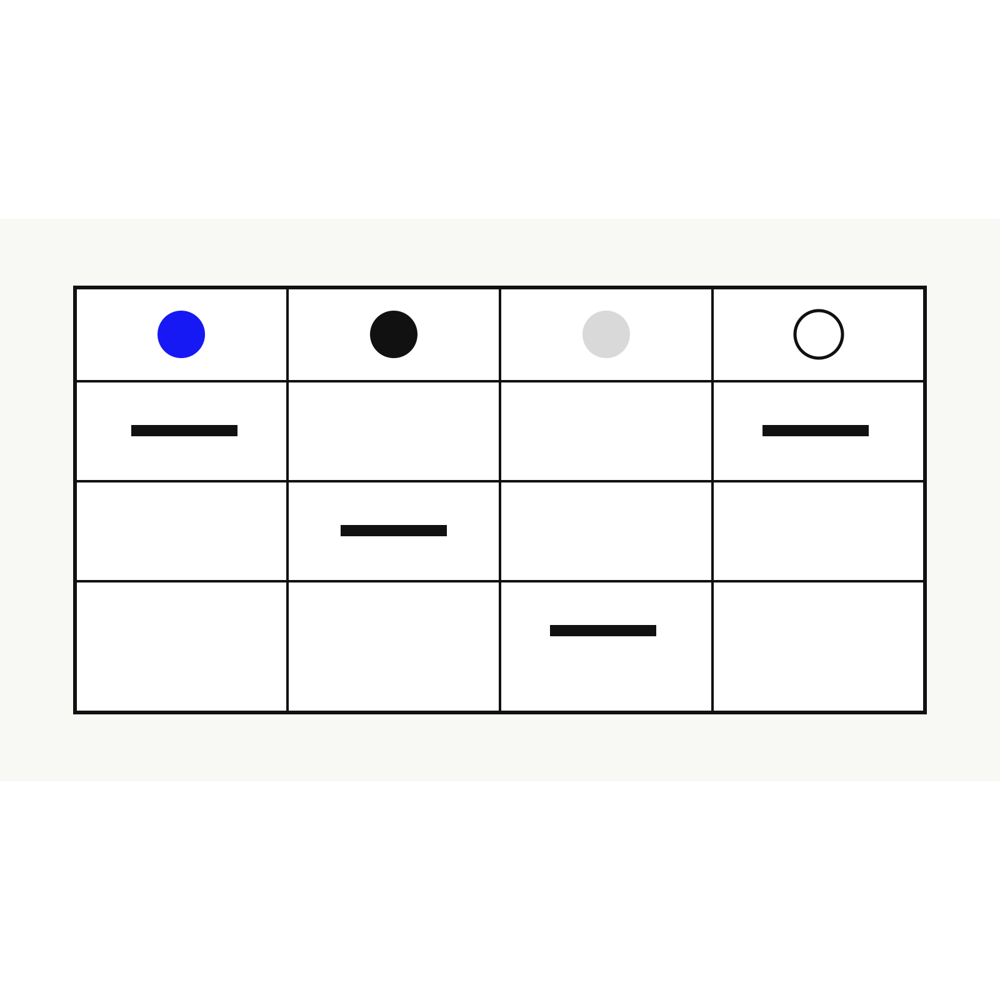

Benchmark
Best visual intelligence apps by task
There is no single best visual intelligence app for every task. Google Lens is best as the baseline for matching, shopping, text, and translation. Apple Visual Intelligence is best for native iPhone workflows. Pinterest Lens is best for inspiration. Chance AI is best positioned for explanation, vocabulary, and everyday visual questions.

Why task-based ranking is more useful
Most rankings treat visual intelligence tools as if they solve one problem. They do not. A camera query can be a shopping query, a translation query, an identification query, a style query, or a reasoning query. A useful benchmark starts by separating those jobs.
| App | Best for | Weakness | Best use case |
|---|---|---|---|
| Google Lens | Matching, shopping, translation, text | Can return similar images without explanation | “Find this product or similar result.” |
| Apple Visual Intelligence | Native iPhone camera and screen workflows | Availability depends on device and OS support | “Use the phone camera or screen as a search layer.” |
| Pinterest Lens | Inspiration, style, interiors, outfits | Less suited to factual explanation | “Find more things with this look.” |
| Chance AI | Explanation, clues, vocabulary, context | Not a pure shopping engine | “Tell me what this is and what words to search.” |
The benchmark question
The better question is not “which app is smartest?” It is: which app moves the user from confusion to the next useful action fastest?
Related guides
Read next: Best apps to identify things from pictures, Google Lens cannot identify this, and Google Lens vs visual reasoning apps.